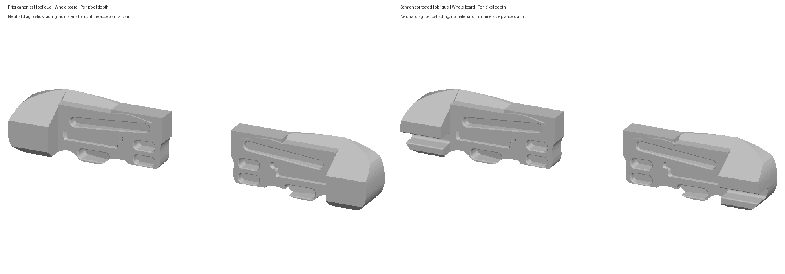
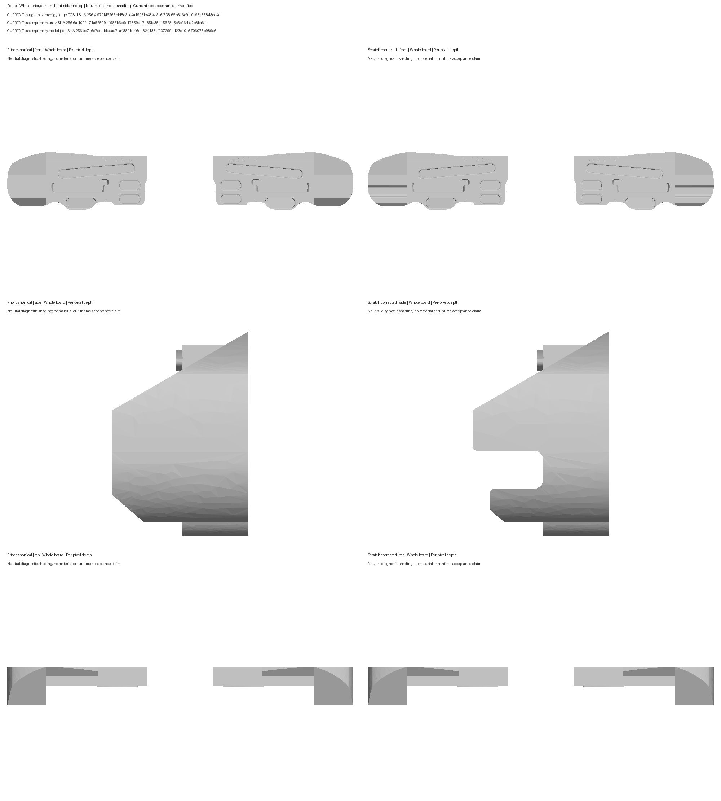

Human CAD shape accepted with y after the requested Opus review. Open outer-wing recess and set-back lower return restored; twenty original hold identities and facts preserved. Plastic is a generic app appearance selector. Neutral CAD renders below are not current app screenshots.
Source 4f970f46263bbf8e3cc4a1995fe48f4c3c6f638f65b816c9fb0a95a65843dc4e
Model 6af1091171a5251914983b6d9c17859eb7e85fe35e15628d5c3c164fe2b8ba61
Descriptor ec716c7eddbfeeae7ca4881b146dd824138af137299ed23c10b5706076b989e6
31 focused Python tests, all 64 package validations, iOS/Android staging parity and generic iOS compilation passed. Current runtime remains unverified.


Full review and estimate notes · Acceptance scope · Opus advisory · Static/build report · Manufacturer sources